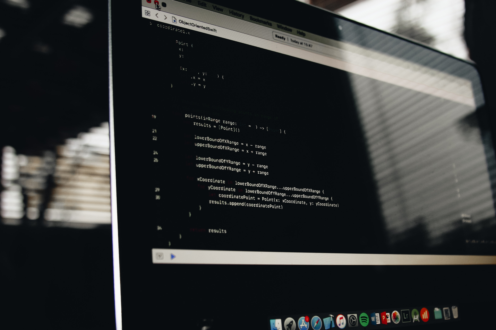

On the night of 20 August 2005, Gary Moore (Thin Lizzy guitarist 1974, 1977, 1978~1979) staged a concert at the Point Theatre in Dublin, Ireland. It featured Brian Downey and ex-Thin Lizzy guitarists Brian Robertson and Eric Bell as well as ongoing Lizzy member Scott Gorham. The concert was simply called "The Boy Is Back in Town", with the "One Night in Dublin" title a change made for the DVD. On 21 April 2009 it was also released on Blu-ray format.
The show was typical in several ways of both Thin Lizzy shows and Gary Moore ones. As always with Thin Lizzy, "Cowboy Song" was followed by "The Boys Are Back in Town", and "Whisky in the Jar" is part of the encore. When Moore recorded "Don't Believe a Word" as a solo artist he played the song in its original slow blues arrangement; here he begins performing his version before switching mid-song to the faster Thin Lizzy-style rock song. As is always so with Moore, he closed with "Parisienne Walkways". Robertson, Gorham and Bell only performed songs they originally performed with Thin Lizzy. The DVD also contains the unveiling of a statue of Phil Lynott in Grafton Street, Dublin earlier that day, and rehearsals and interviews with Thin Lizzy members who featured in this concert.